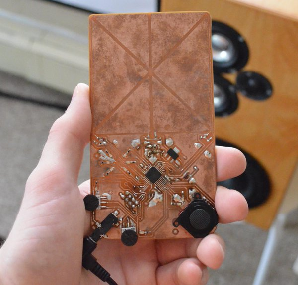
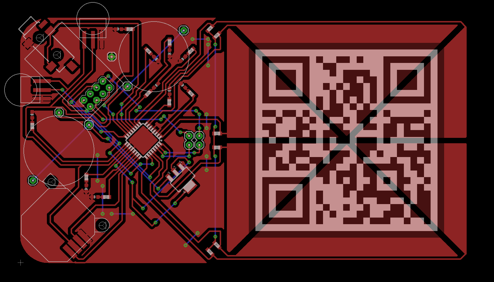

Patch was meant to be a hardware modular synthesizer which emulated multiple synthesizer modules and exposed an AR interface for patching them together with physically simulated patch cables. A QR code stuck to the surface of the PCB would lead to a website hosting a JavaScript web app that rendered the augmented reality layer over the device by tracking the QR code with the camera on the user's device.
The user would be presented with a virtual module bank where they could arrange modules from a library. By dragging their device around while holding a button on the screen they would be able to connect the modules with virtual patch cables.
Behind the scenes the application would serialize a description of the modules the user selected and how the user connected them and then send that data to the actual Patch synthesizer device. Then the microprocessor on the device would do DSP to simulate the modules and generate audio out the onboard headphone jack.
A key feature was that once the user had patched together the modules to their liking they would be stored on the device itself. So it could be configured and then used as a standalone pocket portable musical instrument.
I designed and fabricated the PCB but got bogged down in programming the DSP code on the AVR microprocessor I used. It was overly ambitious but a project where I learned a lot.

Made in 2015